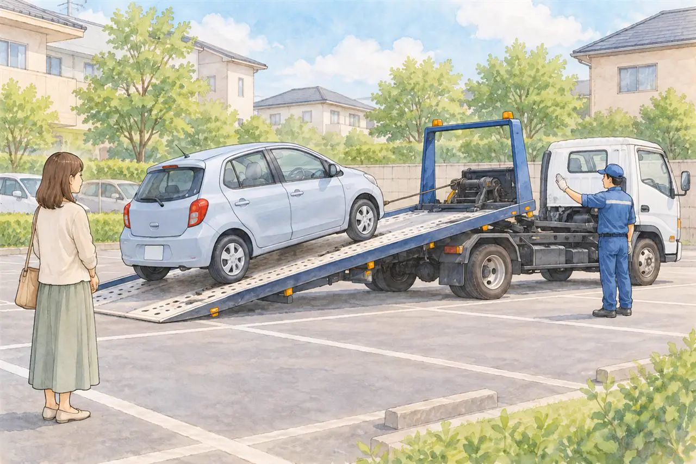

維持費がもったいないと感じている方へ
車の維持費は月いくら？
あまり乗らない車を手放すかどうかの判断の目安
公開
こんにちは、東京都足立区江北で自動車解体・廃車買取をしている「大崎商店 環七店」です。
「あまり乗らないのに、車の維持費がもったいない気がする」
「車の維持費は、月いくらかかっているんだろう」
「手放したら、いくら楽になるのか知りたい」
車は、乗らない日にも、お金がかかります。でも、1年に1回、2年に1回のお金は、月にいくらなのか、分かりにくいものです。
この記事では、車の維持費を、月額にして計算する方法と、手放すかどうかを考える目安を、やさしくご紹介します。後半では、足立区の大崎商店の場合もご案内します。
① 車の維持費には、どんなお金がある？

車を持っていると、次のようなお金がかかります。この記事は、自家用の乗用車（軽乗用車を含む）を主な例にしています。貨物車などは車検の周期が異なるので、ご自身の車の条件に合わせて計算してください。
| お金 | 払うタイミング | 月額にするには |
|---|---|---|
| 駐車場代 | 毎月 | そのまま |
| 任意保険料 | 年1回、または毎月 | 年額 ÷ 12か月 |
| 自動車税（軽自動車は、軽自動車税） | 年1回 | 年額 ÷ 12か月 |
| 車検費用（自賠責保険・重量税などを含む） | 自家用乗用車は初回3年、以後2年ごと | 継続車検は総額 ÷ 24か月。初回までの費用は下記参照 |
| 点検・修理・タイヤ・オイルなど | 不定期 | 年間の目安 ÷ 12か月 |
| 燃料代・充電代、有料道路代など | 使うたび | 毎月の合計 |
普通車の自動車税は、排気量・登録時期・用途など、軽自動車税は車種・用途・初度検査時期などで異なります。納税通知書で確認してください。自賠責保険料・重量税を車検費用に含めた場合は、別に数えないようにします。車検時に払った点検・整備・部品交換費も、ほかの点検・修理費と重ねないようにしましょう。
新車の初回車検までを見積もる場合は、購入時に払った自賠責・重量税と、その間の点検費用などを、対象となる期間に合わせて配分します。初回車検で払う費用を、すべて機械的に36か月で割るという意味ではありません。
② 月額にして、計算してみましょう
次のフォームに、ご自身の金額を入力してください。年払い・車検ごとの費用も、そのまま入力すると月額に換算できます。
あなたの車の維持費を計算
ご自身の金額を入力すると、月額・年額に自動で換算します。空欄の金額は0円として計算します。
計算の例：ガソリンの普通乗用車で、2年ごとの継続車検を受ける場合（すべて仮定です。車検費用には自賠責・重量税等を含め、別の点検・修理費と重ねない前提です）
| 項目 | 例の金額（月） | 考え方 |
|---|---|---|
| 駐車場代 | 15,000円 | 足立区の掲載物件を参考にした仮定 |
| 任意保険料 | 6,000円 | 年72,000円 ÷ 12か月 |
| 自動車税 | 3,000円 | 年36,000円 ÷ 12か月 |
| 車検費用 | 7,000円 | 総額168,000円 ÷ 24か月 |
| 点検・修理・タイヤ等 | 5,000円 | 年60,000円 ÷ 12か月 |
| ガソリン代 | 9,000円 | 毎月の仮定 |
| 合計 | 45,000円 | 年間では540,000円 |
この例の金額は、駐車場代・保険・距離・年式・車の大きさで、大きく変わります。足立区の駐車場代は、物件・設備・車の大きさで異なります。駐車場の相場は、Park Directの足立区の掲載物件や、日本駐車場検索の足立区の相場情報などで、調べられます（掲載サイトや時期によって差があります）。
③ 購入費は、どう考える？
車を買ったときに払った購入費は、上の表に入れていません。購入費は、考え方が2つあります。
- 今の車の購入費を、月額に直して考える：たとえば、180万円の車を、10年使うと考えると、180万円 ÷ 10年 ÷ 12か月 = 月15,000円です
- 次の車に備えて、積み立てる：たとえば、次の車に必要な180万円を10年間で準備するなら、180万円 ÷ 10年 ÷ 12か月 = 月15,000円を積み立てます。すでに用意した資金があれば、目標額から差し引いて計算します
上の維持費の例と合わせると、次のようになります。
| 項目 | 今の車の購入費を含む月額換算 | 次の車に備える月の家計予算 |
|---|---|---|
| 維持費（②の例） | 45,000円 | 45,000円 |
| 今の車の購入費（180万円を10年で換算） | 15,000円 | 支払済みなら毎月の支出はなし |
| 次の車の購入積立て（180万円を10年で準備） | 費用には加算しない | 15,000円 |
| 合計 | 月60,000円相当 | 月60,000円を用意 |
左は、支払った購入費を使う年数で割った費用の見方で、売却額やローン利息を考慮しない単純計算です。右は、今の車の購入代金を払い終えている場合の、維持費と次の購入に備える予算です。
購入費の月額換算と積立ては意味が違うため、両方を足して「保有コストは月75,000円」と数えません。積立ては将来の購入資金で、その時点では自分の資産として残ります。今の車のローンを返しながら積み立てる場合は、右の予算に実際の月々の返済額も加えて、家計から出る金額を確認してください。
手放すかどうかを決めるときに、大切なのは、「これから、かかるお金」です。すでに払った購入費は、手放しても、全額は戻りません。過去に支払った購入費を、そのまま今後の節約額には入れず、これからの維持費と、代わりの交通費を比べるのが目安です。今売った場合に受け取れる買取代金や、今後必要になる買い替え費用も、別に整理すると判断しやすくなります。
④ 代わりの交通費と、比べてみる
車を手放したあとの移動は、電車・バス・徒歩・自転車のほか、必要なときだけ、タクシーやレンタカーを使う方法があります。
例：週2回程度、近所の買い物や通院に使う場合（月8日利用する月の例）
- 1日分の往復のタクシー代を、3,000円と仮定
- 月8日使うと、月24,000円（実際は、その月の利用日数で計算します）
②の維持費の例45,000円と比べると、単純な差額は21,000円です。ただし、これは費用を月額に直した例の比較です。税金・保険・駐車場代がいつまでかかるか、電車・バスなどの交通費がほかに増えないかを確認して、実際の負担を比べましょう。
荷物の多い買い物や、遠出の日だけ、レンタカーを借りる方法もあります。ただし、次の点に、注意してください。
- 毎回、丸1日レンタカーを借りる、長距離をタクシーで移動する使い方は、かえって高くなることがあります
- レンタカーは、基本料金に、燃料代・補償料などが加わります。トヨタレンタカーの公式料金案内で、料金の内訳を確認できます
- タクシーは、往復の距離・時間で、見積もります
- 1か月の合計で、比べてください。予約の取りやすさや、家族の送迎・通院に支障がないかも、確認しましょう
⑤ 手放すと、減るお金と、減らないお金
車を手放すと、次のようになります。
減るお金
- 駐車場代（駐車場の解約日までは、かかります。解約の予告期間を、確認してください）
- ガソリン代・点検・修理費
- これから先の車検費用・自動車税等（税金は引渡しだけでは止まらないため、名義変更・抹消等の予定日を確認します）
- 任意保険料（解約や契約変更等により、保険料負担がなくなる・減る場合。手続きの時期と返金の有無は契約先へ確認します）
減らないお金・確認が必要なお金
- すでに払った購入費
- ローンの残り：ローンが残っている場合は、返済が続きます。所有者の名義によって、手続きが変わります。くわしくは、ローンが残っている車は廃車できる？の記事をご覧ください
戻ってくるお金・別に精算するお金
- 普通車の自動車税の還付金：納付済みの場合、通常は抹消登録した月の翌月から年度末までの分が対象です。名義変更だけでは税窓口から月割り還付されず、売却時の精算は契約によります。軽自動車税には、年度途中の廃車による月割り還付はありません
- 自動車重量税の還付金：適正に解体し、解体に伴う手続きと同時に申請することや、制度上の車検残存期間が1か月以上あることなどが条件です。中古車として売るだけでは、通常の廃車還付の対象になりません
- 自賠責保険の返戻金：解約できる条件や保険期間の残りにより異なります。自動では戻らないため、保険会社への手続きが必要です
くわしくは、廃車にするとお金は戻ってくる？還付金のことの記事をご覧ください。
任意保険は、解約日・契約変更の内容に加え、将来の再加入に備えた中断証明書の発行条件と申請期限を保険会社へ確認しましょう。中断証明書は、保険料の返金とは別の仕組みです。任意保険の中断証明の記事で詳しくご案内しています。
維持費の月額換算と、手放した直後の家計の節約額は同じとは限りません。すでに支払った税金・保険料、これから払う費用、積立てとして手元に残るお金を分けて考えましょう。買取代金や還付金は一度受け取るお金として、毎月の差額とは別に比べると分かりやすくなります。
引っ越しで車を手放すときの廃車と売却の違いは、「引っ越しで車を手放すとき、廃車と売却どちらがいい？判断の目安と、引っ越し前にやること」の記事をご覧ください。
買い替えのときに古い車をいつ手放すかは、「車を買い替えるとき、古い車はいつ・どう手放す？下取り・売却・廃車買取の考え方と、タイミングの注意」の記事をご覧ください。
⑥ 手放すときの方法
車を手放す方法は、車の状態で、考え方が変わります。
- 再販売できる車は、売却（中古車として売る）
- 修理費や損傷の状態などから、再販売が難しいと判断された車は、解体・再資源化を前提に引き取り
古い車や走行距離が多い車でも、修理して再販売できる場合や、解体する車に部品・資源として値段がつく場合があります。 くわしくは、古い車・10万km超えの車でも値段はつく？の記事をご覧ください。
依頼先には、買取額に還付金・返戻金の見込額を含むか、別途受け取るか、引き取り等の費用を引いた最終的な受取額・支払額を確認しましょう。中古車として売る場合は、資金管理料金を除くリサイクル料金相当額の精算も確認します。解体する車の預託済みリサイクル料金は、解体・再資源化に使われ、返金されません。
廃車にかかるお金の全体像は、廃車の手数料・解体費用・レッカー代は？の記事をご覧ください。
よくある質問
Q. 車の維持費は、月いくらが、一般的ですか？
A. 車の種類、駐車場代、保険、走る距離などで、大きく変わります。この記事の金額は、計算の例です。ご自身の金額で、計算してみてください。
Q. あまり乗らなくても、維持費はかかりますか？
A. かかります。駐車場代、保険料、税金、車検費用などは、乗らない日にもかかります。
Q. 購入費も、維持費に入れますか？
A. 購入費は、別に考えます。手放すかどうかを決めるときは、これからかかる維持費と、代わりの交通費を比べるのが、考え方の目安です。
Q. レンタカーやタクシーの方が、安くなりますか？
A. 使い方によります。使う回数、距離、時間で変わるため、1か月の合計で、比べてください。
Q. ローンが残っていても、手放せますか？
A. 所有者の名義や、残りの金額によって、手続きが変わります。ローンの記事をご覧ください。
Q. 駐車場の解約が、間に合うか心配です。
A. 解約の予告期間を、駐車場の管理会社に確認してください。引き取りの日程は、早めに、依頼先に相談しましょう。
大崎商店の場合：車を手放す相談
ここからは、足立区の大崎商店の場合を、ご案内します。

大崎商店は、再販売できる車の買取も、解体する車の引き取りも行っています。あまり乗らなくなった車を、手放したいというご相談も、お電話で、お受けしています。
- 足立区内は、引き取り無料です
- 足立区外も、買取価格がつかない車は、環七店から片道約30分圏内は、引き取り無料
- 買取価格がつく車は、圏外でも、所在地と車の状態によっては無料で引き取り（事前にご案内します）
- 解体費用・手続き代行費用・印紙代は、別請求しません
- ハイエースなど、トヨタ車は、値段がつきやすいです。年式・走行距離で、「ここから先は買い取れない」という線は、ありません
- 駐車場の解約日が決まっている場合も、ご相談に応じます。 引き取りのご依頼は、優先して、日程を調整しています。ご希望の期限を、事前にお電話でお伝えください。優先して調整しますが、ご希望の日までの引き取りを必ずお約束するものではありません
- 車検が残っている車は、解体などの条件を満たせば、重量税の還付等を受けられる場合があります。当店では、還付金・返戻金等の見込額を、買取価格に含め、当店が受け取る形が多くなっています。含めた分がお客様に別途、二重に支払われるわけではありません。ご自身で受け取る方法も、ご相談ください
- 車のお持ち込みは、どこからでも歓迎（基本は環七店。日時は、事前にお電話でご相談ください）
お電話で、確認すること
ご相談のお電話では、次のことをお伺いします。車検証をお手元にご用意ください。電子車検証の所有者情報は、自動車検査証記録事項や車検証閲覧アプリでご確認ください。
- 車検証の情報（車種・年式など）
- 車検証の「所有者」「使用者」が、お電話いただいている、ご本人か
- ローンが残っているか
所有者が、ディーラー・販売店の場合でも、ご相談をお受けしています。 ただし、所有者の同意を、先に取ってきていただくようお願いしています。 必要書類は、お電話でご案内します。
くわしくは、出張引き取りの対応エリア｜無料で伺える範囲は？の記事をご覧ください。
車を手放すことも、大崎商店にご相談ください
電話で相談する 03-3854-4141メールで相談する（フォーム）ご来店の前に、お電話ください。引き取りなどで外出していることもあり、お電話いただければ、受け入れの可否や、ご案内できる日時をお伝えできます。
大崎商店 環七店
電話：03-3854-4141
〒123-0872
東京都足立区江北7丁目1−3
営業時間：月〜土 10:00〜18:00
休業日：日曜・祝日
環七沿い／舎人ライナー
西新井大師西駅
大崎商店 入谷店
電話：03-3899-2837
〒121-0836
東京都足立区入谷7丁目5−11
営業時間：月〜土 9:30〜17:30
休業日：日曜・祝日・第2土曜
引き取りやご相談のお電話は、環七店がスムーズです。お電話の際は、「車を手放したい」とお伝えください。
※掲載のイラストはAIで作成したイメージです。実際の店舗・車の様子を撮影したものではありません。金額は、計算のしかたを示す仮の例で、平均・最低額・相場ではありません。
参考：自動車技術総合機構・車検の種類と有効期間／東京都主税局・自動車税のよくある質問／足立区・軽自動車税／国税庁・重量税の廃車還付制度／自動車リサイクル促進センター・料金の精算／Park Direct・足立区の駐車場／日本駐車場検索・足立区／トヨタレンタカー・料金の計算方法